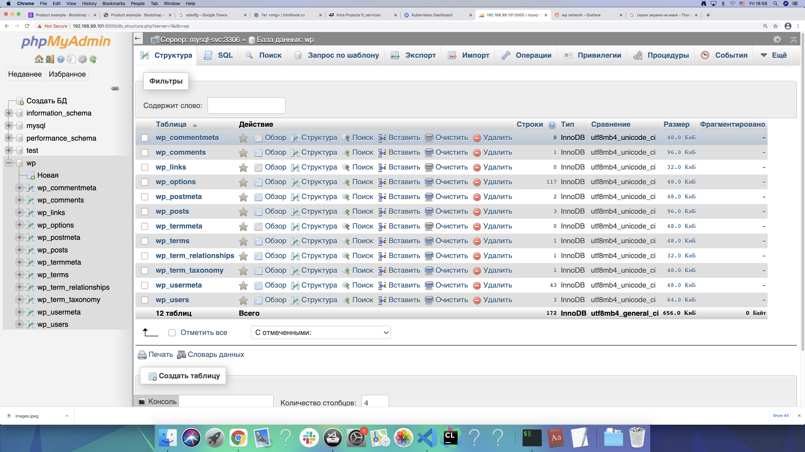
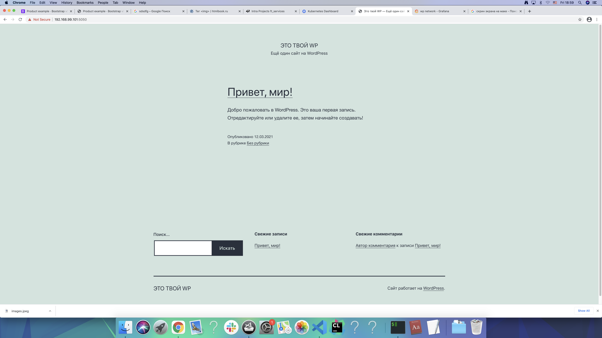
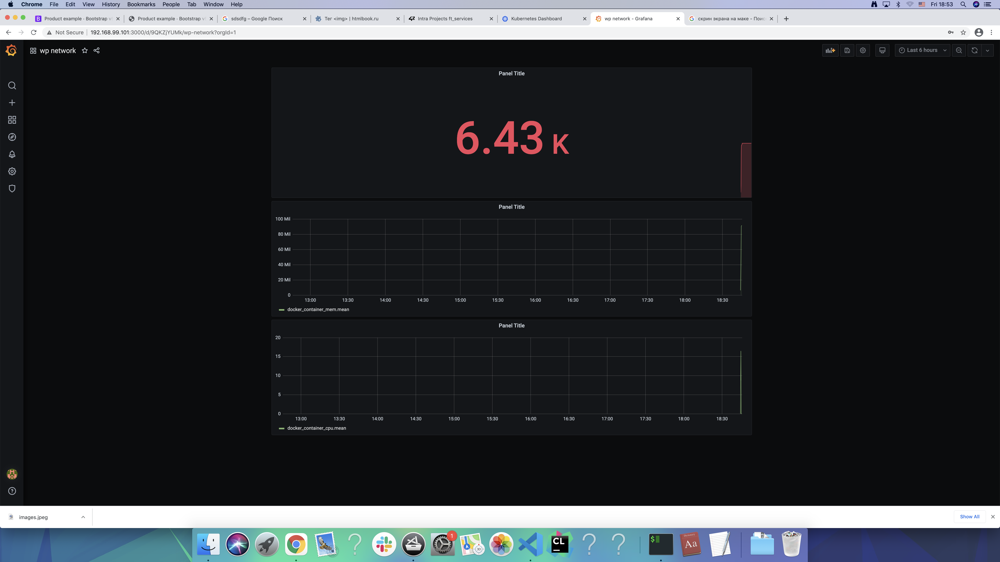

WordPress
WordPress — система управления содержимым сайта с открытым исходным кодом; написана на PHP.
Прямой доступ Редирект
Grafana
Grafana - это многоплатформенное веб-приложение для аналитики и интерактивной визуализации с открытым исходным кодом.
Ссылка